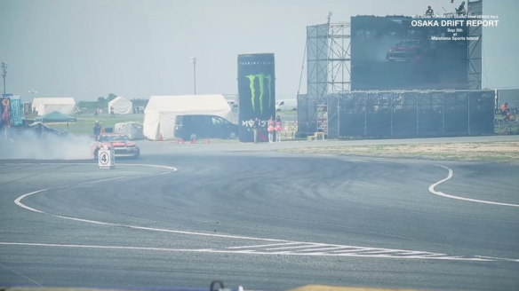
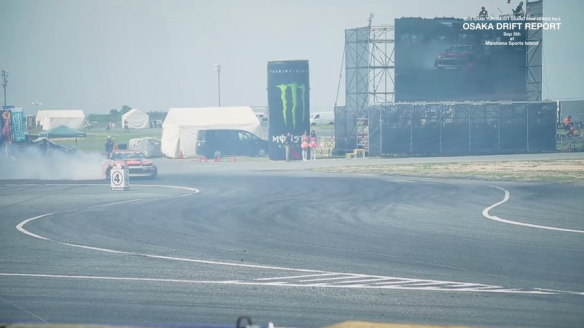
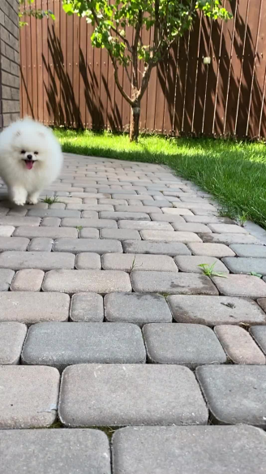
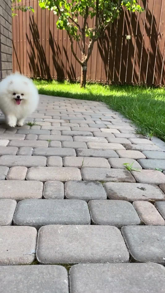

Abstract
We present a system that allows for accurate, fast, and robust estimation of camera parameters and depth maps from casual monocular videos of dynamic scenes. Most conventional structure from motion and monocular SLAM techniques assume input videos that feature predominantly static scenes with large amounts of parallax. Such methods tend to produce erroneous estimates in the absence of these conditions. Recent neural network based approaches attempt to overcome these challenges; however, such methods are either computationally expensive or brittle when run on dynamic videos with uncontrolled camera motion or unknown field of view. We demonstrate the surprising effectiveness of recently proposed deep visual SLAM frameworks for this setting. We show that with careful modifications to their training and inference schemes they can scale to real-world videos of complex dynamic scenes with unconstrained camera paths, including videos with little camera parallax. Extensive experiments on both synthetic and real videos demonstrate that our system is significantly more accurate and robust at camera pose and depth estimation when compared with prior and concurrent work, with faster or comparable running times.
We show results from MegaSaM on a variety of monocular videos
Interactive examples
[Demo requres browser with WebGL2 support.]
Loading...
Press Space to play/pause, drag to change camera.


 



 
